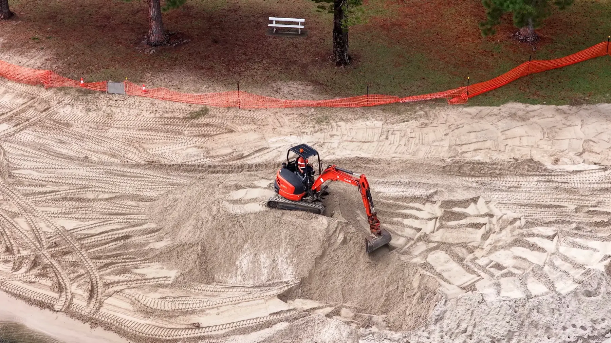
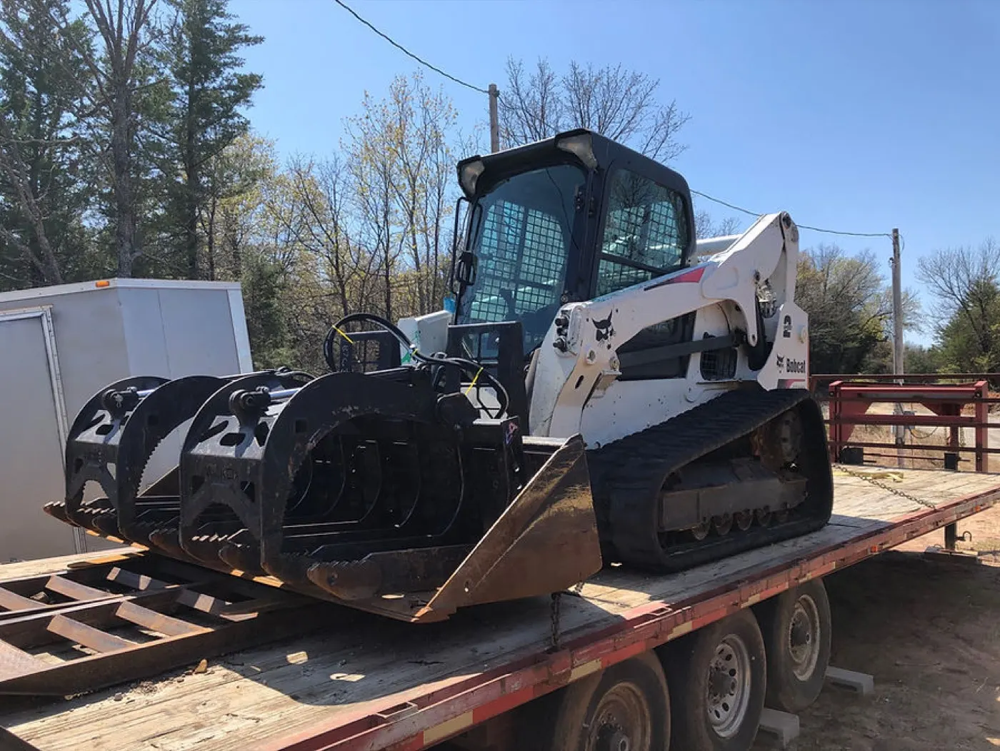

Building Pads and Site Prep
- Level pads for homes, shops, and barns
- Ground prepped for a new build
- A flat, stable base that holds

CG Dirt Work and More handles the excavation and site prep that gets your ground ready for whatever comes next. Whether you are putting up a house, a shop, or a barn, or just need uneven ground made level and usable, we move the dirt and set the foundation right across Cleveland, Sand Springs, and the surrounding Pawnee, Osage, Tulsa, and Rogers County communities.
Here is the excavation and site prep work we handle to get yours ready.

We do not just push dirt around and call it done. Coty Goodwin runs the equipment himself, and he knows what the ground is going to do once the machine pulls off. Where the water will run, how the soil settles over a wet winter, whether that pad is going to stay put or sink. That is the difference between a site that holds and one that gives you trouble a year down the road.
Every job across northeast Oklahoma gets the same approach: read the ground first, grade it right, and leave it ready for what comes next.
More About UsWe pack the base so pads and grades stay put instead of settling, cracking, or shifting after the weight goes on.
We set the grade to carry water away from your structure, not toward it, so you are not fighting standing water later.
Brush, timber, and spoil get pulled and hauled away, so your builder shows up to open, ready ground.
We read the soil and the slope first, so the site is graded for what your land actually does, not just leveled flat.
Ground that is not prepped right causes problems that show up later. Doing it correctly the first time saves you from paying twice.

We handle excavation and site preparation on residential lots and rural property throughout Pawnee, Osage, Tulsa, and Rogers County and the communities around Tulsa.

Straight answers to the questions we hear most from people getting ground ready for a home, shop, or barn.
Excavation cost depends on the size of the job, how much clearing and grading the ground needs, the condition of the soil, and how much dirt has to be cut, filled, or hauled off. A flat lot that needs a simple building pad is a very different excavation job from a wooded, sloped site that has to be cleared and reshaped before anything goes up. What costs the most in the long run is skipping proper site prep, since settling and drainage problems mean tearing the work out and redoing it. We handle excavation and site preparation across the Tulsa metro and northeast Oklahoma and give you a clear estimate after we look at the site.
Site preparation is everything an excavation contractor does to the ground before construction starts. That means clearing the site of brush and trees, grading a level building pad, cutting down high ground and filling low ground to the right elevation, and shaping the site so water drains away from the structure instead of toward it. Done right, your builder shows up to solid, level ground ready to go. We do excavation and site prep for homes, shops, barns, and accessory structures throughout Pawnee, Osage, Tulsa, and Rogers County.
A building pad needs a level, compacted base that holds the weight of the structure without settling. Excavation for a pad starts with clearing the spot, cutting and filling to the right elevation, and compacting the ground so the pad stays put. Get this wrong and a pad can sink or shift, which cracks slabs and throws a build out of level. We grade and compact building pads across northeast Oklahoma so your structure starts on excavated ground that holds.
Yes. Clearing brush, trees, and overgrowth is usually the first step of excavation and site prep on a new build. We clear the site, haul off what we pull out, and grade what is left so the ground is ready for the next phase. If your build site is wooded or overgrown, that clearing is part of the same excavation job across the Tulsa metro and the surrounding communities.
We are based near Tulsa and handle excavation and site preparation throughout Pawnee, Osage, Tulsa, and Rogers County, including Owasso, Collinsville, Sperry, Claremore, and the rural acreage around them. If your excavation project is within about an hour of Tulsa, give us a call and we will tell you what it takes to get your ground ready.
Tell us what you are building and what the ground looks like now, and you will get back a straight answer about what it takes to get it ready.